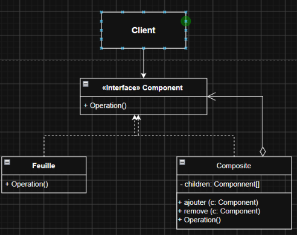
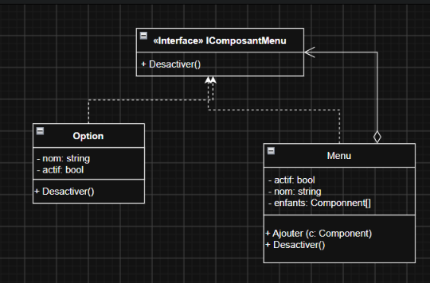

Appartenant à la catégorie structurale, le patron Composite sert à manipuler une structure en forme d'arbre en traitant tous ses éléments de la même façon, qu'ils soient simples ou composés. Sans lui, le code qui agit sur la structure doit constamment distinguer un objet simple d'un conteneur pour les traiter différemment, alors qu'on souhaiterait les manipuler de façon uniforme.
Les acteurs du patron
Son fonctionnement repose sur trois acteurs :
Composant : l'interface commune à tous les éléments de l'arbre. Elle déclare les opérations que chacun doit savoir faire.
Feuille : un élément simple, sans enfant. C'est elle qui réalise concrètement le travail.
Composite : un élément qui contient des enfants (feuilles ou autres composites) et qui leur délègue le travail de façon récursive.

Diagramme UML de la structure générale du patron Composite
Simplification du code : on traite des objets de différents types de la même façon, sans avoir à faire de distinction.
Facilite l'ajout de nouveau types d'éléments dans l'arborescence, sans modifier ce qui existe déjà
Désavantages
L'interface commune est parfois difficile à définir : le patron suppose que tous les éléments de l’arbre partagent une même interface. Mais quand leurs fonctionnalités sont trop différentes, il devient compliqué de trouver ce qui leur est vraiment commun. On est alors forcé de créer une interface trop générale, qui déclare des opérations n’ayant pas de sens pour tous les éléments, ce qui rend le code plus difficile à comprendre. Par exemple, dans une navigation web, l'opération de désactivation fonctionne bien pour un menu comme pour une option. Mais si l’on voulait ajouter une opération de recherche, elle aurait un sens pour un menu puisque on peut chercher parmi ses enfants mais aucun pour une option qui n'a pas d'enfant. L’ajouter dans l'interface (le composant) créerait donc une méthode incohérente pour les objets de type Option.
Prenons la navigation d'un site web. Un menu peut contenir des options (un simple lien) ainsi que d'autres menus, qui contiennent eux-mêmes des options et des sous-menus, de façon récursive.
Supposons qu'on veuille désactiver une section de la navigation. L'opération est la même, qu'il s'agisse d'une option ou d'un menu entier sauf que désactiver un menu devrait désactiver tout ce qu'il contient. Cette différence entre les deux classes obligerait le code à les distinguer à chaque étape du parcours. Cette vérification répétée alourdit le code, car les deux ne seront pas traité de la même façon.
publicclassOption{privatestring_nom;privatebool_actif;publicOption(stringnom,boolactif=false){_nom=nom;_actif=actif;}/// <summary>/// Méthode pour désactiver une option/// </summary>publicvoidDesactiver(){_actif=false;}publicstringNom{get{return_nom;}privateset=>_nom=value;}publicboolActif{get{return_actif;}privateset=>_actif=value;}}
publicclassMenu{privatestring_nom;privatebool_actif;privateList<Option>_options=newList<Option>();privateList<Menu>_sousMenus=newList<Menu>();publicMenu(stringnom,boolactif=false){Nom=nom;Actif=actif;}/// <summary>/// Ajouter une option au menu/// </summary>/// <param name="o"></param>publicvoidAjouterOption(Optiono){_options.Add(o);}/// <summary>/// Ajouter un sous menu au menu/// </summary>/// <param name="m"></param>publicvoidAjouterSousMenu(Menum){_sousMenus.Add(m);}publicstringNom{get{return_nom;}privateset=>_nom=value;}publicboolActif{get{return_actif;}set=>_actif=value;}publicList<Option>Options=>_options;publicList<Menu>SousMenus=>_sousMenus;}
publicclassNavigation{/// <summary>/// Methode pour desactiver un menu et ses sous menus/// </summary>/// <param name="menu"></param>publicvoidDesactiver(Menumenu){//1.Desactiver le menu lui-mêmemenu.Actif=false;//2. Parcourir chacune des options afin de la desactiverforeach(Optionoinmenu.Options){o.Desactiver();}//3. Parcourir chacun des sous menu afin de les desactiver aussi foreach(MenusousMenuinmenu.SousMenus){Desactiver(sousMenu);}}}
La solution avec le patron Composite
On donne à Menu et Option une interface commune, IComposantMenu (le composant), qui déclare la méthode Desactiver(). Chacun joue alors son rôle :
Option est la feuille : elle se désactive.
Menu est le composite : il se désactive, puis demande la même chose à chacun de ses enfants (récursion), qu'ils soient des options ou des sous-menus.
Le code manipule donc n'importe quel élément à travers IComposantMenu et appelle une seule méthode Desactiver(), sans jamais distinguer le type.
/// <summary>/// Methodes propres aux composants d'un menu/// </summary>publicinterfaceIComposantMenu{// Tout composant de saura comment se desactivervoidDesactiver();}
/// <summary>/// Classe option/// </summary>publicclassOption:IComposantMenu{privatestring_nom;privatebool_actif;/// <summary>/// Constructeur/// </summary>/// <param name="nom"></param>publicOption(stringnom,boolactif=true){_nom=nom;_actif=actif;}publicstringNom{get{return_nom;}privateset=>_nom=value;}publicboolActif{get{return_actif;}privateset=>_actif=value;}/// <summary>/// implementation de la méthode du composant/// </summary>publicvoidDesactiver(){_actif=false;}}
publicclassMenu:IComposantMenu{privatestring_nom;privatebool_actif;//Liste d'enfant d'un menu pouvant être une option ou un menuprivateList<IComposantMenu>_enfants=newList<IComposantMenu>();publicMenu(stringnom,boolactif=false){_nom=nom;_actif=actif;}publicstringNom{get{return_nom;}privateset=>_nom=value;}publicboolActif{get{return_actif;}privateset=>_actif=value;}/// <summary>/// Ajouter un enfant/// </summary>/// <param name="enfant"> Objet qui implémente l'interface IComposantMenu</param>publicvoidAjouter(IComposantMenuenfant){_enfants.Add(enfant);}/// <summary>/// Implementation de la méthode du composant/// </summary>publicvoidDesactiver(){_actif=false;//Demande à chacun de ses enfants de se descativer sans connaitre le typeforeach(varenfantin_enfants){enfant.Desactiver();}}}
publicclassNavigation{/// <summary>/// Methode pour desactiver un menu et ses sous menus/// </summary>/// <param name="racine"></param>publicvoidDesactiver(IComposantMenuracine){//plus de boucle, le code devient legerracine.Desactiver();}}

Diagramme UML de la structure du patron Composite
Exemple de code dans un langage objet explicite Dépôt C#